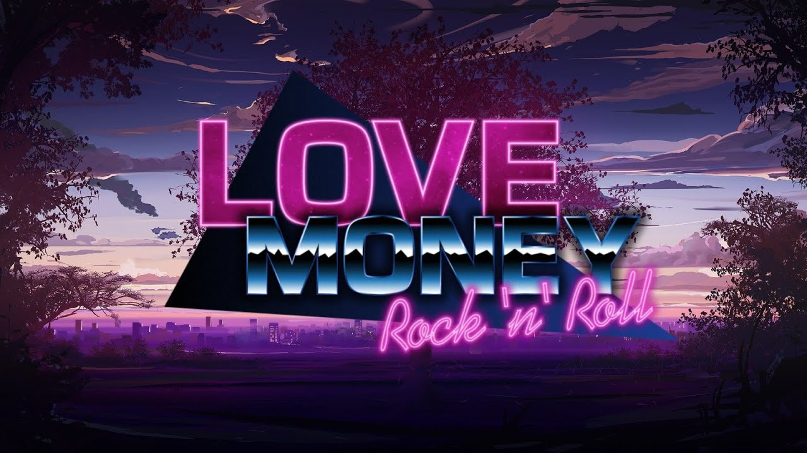

Любовь, Деньги, Рок-н-Ролл
«Любовь, Деньги, Рок-н-Ролл» (англ. Love, Money, Rock’n’Roll) — компьютерная игра в жанре визуального романа, разработанная и изданная командой Soviet Games, что также известна работой над «Бесконечным летом». Релиз игры неоднократно откладывался, выпуск состоялся 4 августа 2022 года.
Содержание
- Игровой процесс
- Сюжет
- Концовки
- Разработка
- Отзывы
Игровой процесс
Игра представляет собой визуальный роман. Сюжет развивается на протяжении 28 игровых дней. По его ходу игрок принимает определённые решения, влияющие на дальнейшее развитие сюжета и его концовку.
Сюжет
События игры разворачиваются в восьмидесятые года вокруг Николая, сына советских инженеров, эмигрировавших в Японию. Ему предстоит столкнуться с мрачными призраками прошлого и решить для себя, кому он может доверять.
Концовки
Всего в игре 14 концовок, каждая из них зависит от решений, принятых Николаем во время прохождения, а также от количества уделяемого внимания каждой из девушек.
Разработка
Сразу же после выхода «Бесконечного лета» разработчики взялись за новый проект, со временем выкладывая в своей группе ВКонтакте различные арты, эскизы и спрашивали аудиторию чего они хотят больше увидеть в игре. 27 сентября 2016 года разработчики организовали сборы на Kickstarter запросив 30 тыс. долларов США. Чтобы заинтересовать как можно больше людей в этом, они выпустили бесплатную демо-версию игры. Также разработчики объявили что игра будет не на движке Ren'Py как предыдущий проект, а на Unity, для удобства выпуска проекта на ПК и iOS/Android.
Отзывы
Кирилл Волошин из StopGame.ru отмечал, что в игре присутствуют «хорошо прописанные персонажи; качественная картинка и атмосферная музыка». Хотя Глеб Мещеряков с того же StopGame.ru в своём обзоре поставил игре оценку «Проходняк» и сказал, что проходить игру во второй раз не возникает никакого желания, а главного героя назвал больным шизофренией. Григорий Белкин из газеты «Аргументы недели» считает, что «главными проблемами игры являются: атмосфера, „слепые выборы“ и отношения персонажей», то есть всё, что является важными частями визуальных новелл.